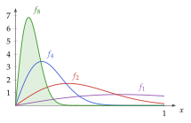
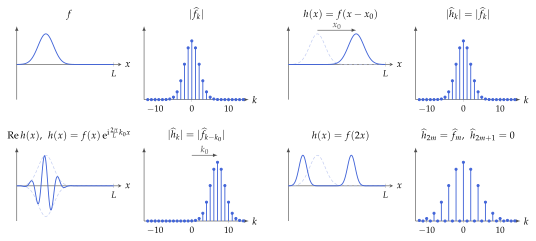
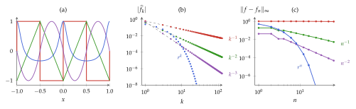
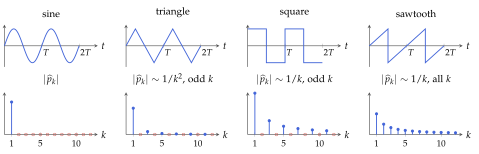
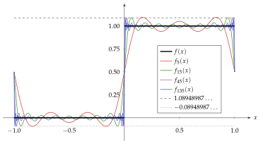
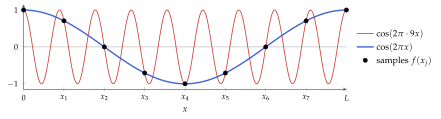
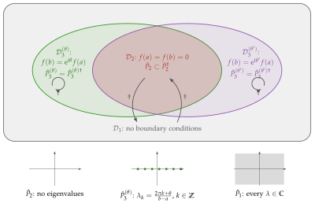
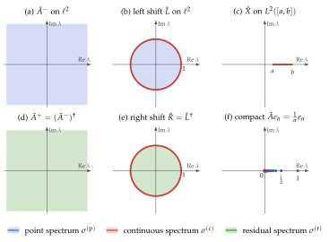

Hoofdstuk 8 - Functieruimten
Doel van dit hoofdstuk
$$ % Math operators % %
% VECTORS % specifically for vectors in F^n
% MATRICES
% SCALARS
% LINEAR MAPS
% FIELDS
% RELATIONS
$$
- Inzicht krijgen in de complicaties van het werken met functieruimten: waarom de Lebesgue-integraal nodig is
- Orthonormale basissen voor functieruimten:
- orthogonale veeltermen:
- belangrijkste eigenschappen
- voornaamste families die relevant zijn in de fysica
- Fourierreeks:
- eigenschappen
- convergentie en convergentiesnelheid
- verband met discrete Fouriertransformatie
- orthogonale veeltermen:
Doel van dit hoofdstuk
- Belangrijkste operatoren op functieruimten: integraaloperatoren, vermenigvuldigingsoperatoren, differentiaaloperatoren
- Eigenschappen van onbegrensde operatoren
- Toegevoegde van een onbegrensde operator
- Verschil tussen symmetrisch en zelftoegevoegd
- Belang hiervan in de context van differentiaaloperatoren en randvoorwaarden
- Intuïtie krijgen voor de spectraaltheorie van begrensde en onbegrensde operatoren op oneindig-dimensionale Hilbertruimten aan de hand van relevante voorbeelden
Terugblik: H4, H5 en H7
wat we nodig hebben
Terugblik: normen en volledigheid (H4)
- p-norm op C^0([a,b]): {\left\lVert f\right\rVert}_p = \left(\int_a^b {\left\lvert f(x)\right\rvert}^p\,{\mathrm{d}}x\right)^{1/p} (Vb 4.3)
- Uniforme norm: {\left\lVert f\right\rVert}_\infty = \max_{x\in[a,b]}{\left\lvert f(x)\right\rvert} (Vb 4.5)
- Puntsgewijze convergentie komt van geen enkele norm (Vb 4.6)
- Cauchy-rij: {\left\lVert v_n - v_m\right\rVert} \to 0; compleet: elke Cauchy-rij convergeert (Def 4.8–4.9)
- Banachruimte = complete genormeerde vectorruimte (Def 4.10)
- (C^0([a,b]), {\left\lVert\cdot\right\rVert}_\infty) is Banach (Vb 4.10)
- (C^0([a,b]), {\left\lVert\cdot\right\rVert}_p) met p < \infty is niet compleet, bv. p = 2 (Vb 5.5)
- Complete verzameling S: \overline{{\mathbb{F}}S} = V (Def 4.11)
- Weierstrass: de eentermen (monomen) x^n zijn compleet in (C^0([a,b]), {\left\lVert\cdot\right\rVert}_\infty) (Vb 4.12)
Terugblik: begrensde operatoren (H4)
- Begrensd: {\left\lVert{\hat{A}} v\right\rVert} \leq C {\left\lVert v\right\rVert} voor alle v \in V (Def 4.16)
- Begrensd \Leftrightarrow continu (Prop 4.12)
- \mathop{\mathrm{dim}}V < \infty: elke lineaire afbeelding is begrensd (Prop 4.13)
- Operatornorm: kleinste zo’n C (Def 4.19) {\left\lVert{\hat{A}}\right\rVert} = \sup_{v \neq 0} \frac{{\left\lVert{\hat{A}} v\right\rVert}}{{\left\lVert v\right\rVert}}
Terugblik: Hilbertruimten (H5)
- Hilbertruimte: inwendigproductruimte die compleet is voor {\left\lVert v\right\rVert} = \sqrt{{\left\langle v,v\right\rangle}} (Def 5.14)
- Voorbeelden: \ell^2 (Vb 5.4), L^2 met {\left\langle f,g\right\rangle} = \int \overline{f(x)} g(x)\,{\mathrm{d}}x (Vb 5.6)
- Parallellogramwet: de norm komt van een inwendig product \Leftrightarrow (Prop 5.5, St 5.6) {\left\lVert v + w\right\rVert}^2 + {\left\lVert v - w\right\rVert}^2 = 2 \left({\left\lVert v\right\rVert}^2 + {\left\lVert w\right\rVert}^2\right)
- Projectiestelling: W gesloten deelruimte \Rightarrow V = W \oplus W^\perp (St 5.13)
- De beste benadering van v in W is de orthogonale projectie
- Gram-Schmidt: lineair onafhankelijke rij \rightarrow orthonormale rij (Def 5.20)
Terugblik: orthonormale basissen (H5)
- Complete orthonormale rij (e_i): orthonormaal met \overline{\mathop{\mathrm{span}}\{e_i\}} = V
- Expansiestelling: (e_i) is een Schauderbasis (St 5.23) \boxed{v = \sum_{i=1}^{+\infty} {\left\langle e_i,v\right\rangle}\, e_i}
- Plancherel: {\left\lVert v\right\rVert}^2 = \sum_{i=1}^{+\infty} {\left\lvert{\left\langle e_i,v\right\rangle}\right\rvert}^2 (Gev 5.24)
- Voorbeeld: f_k(x) = \frac{1}{\sqrt{L}}{\mathrm{e}}^{{\mathrm{i}}2\pi k x/L} op L^2([0,L]) (Vb 5.8)
Terugblik: operatoren op Hilbertruimten (H5, H7)
- Riesz: elke begrensde lineaire functionaal is \xi[w] = {\left\langle v_\xi,w\right\rangle} (St 5.27)
- Toegevoegde: {\left\langle w,{\hat{A}} v\right\rangle} = {\left\langle{\hat{A}}^\dagger w,v\right\rangle}, met {\left\lVert{\hat{A}}^\dagger\right\rVert} = {\left\lVert{\hat{A}}\right\rVert} (Prop 5.28)
- Zelftoegevoegd: {\hat{A}} = {\hat{A}}^\dagger (Def 5.23) \Rightarrow eigenwaarden reëel (Opm 5.43)
- Unitair: {\hat{U}}^\dagger{\hat{U}} = {\hat{1}} en {\hat{U}}{\hat{U}}^\dagger = {\hat{1}} (Prop 5.32)
- Normaal: {\hat{A}}^\dagger{\hat{A}} = {\hat{A}}{\hat{A}}^\dagger (Def 5.24)
- Eigenvectoren bij verschillende eigenwaarden zijn orthogonaal (Prop 5.35)
- Discrete Fouriertransformatie: unitair op {\mathbb{C}}^n (Def 7.4) F_k = \frac{1}{\sqrt{n}} \sum_{j=0}^{n-1} f_j\, {\mathrm{e}}^{-{\mathrm{i}}2\pi j k/n}
- Verband met de Fourierreeks?
Functieruimten en normen
(achtergrond en motivatie)
Functieruimten
Definitie 8.1. Een functieruimte Y^X is een verzameling van functies f : X \to Y, van een verzameling X naar een vectorruimte Y over {\mathbb{F}}, die een vectorruimte over {\mathbb{F}} wordt door lineaire combinaties puntsgewijs te definiëren: \boxed{(a f + b g)(x) = a f(x) + b g(x) \quad \forall x \in X}
- Y = {\mathbb{F}}, X = \{1, \ldots, n\}: Y^X \cong {\mathbb{F}}^n
- Y = {\mathbb{F}}, X = {\mathbb{N}}_0: oneindig lange rijen
- Functieruimten in strikte zin: X onaftelbaar, bv. X = [a,b], {\mathbb{R}} of \Omega \subseteq {\mathbb{R}}^d
Opmerking 8.1. Bijkomende voorwaarden (continuïteit, kwadratische integreerbaarheid, …) blijven meestal behouden onder lineaire combinaties.
Dit laat toe om deelruimten van Y^X te construeren, bv. de continue of de kwadratisch integreerbare functies.
Lebesgue-ruimten
We willen minstens een norm (vanaf sectie 8.2: inwendig product): {\left\lVert f\right\rVert}_p = \left(\int_I {\left\lvert f(x)\right\rvert}^p\,{\mathrm{d}}x\right)^{1/p} \quad ?
- Vanaf nu f : I \to {\mathbb{F}} met I = [a,b] of I = {\mathbb{R}} (voor de eenvoud)
- Mogelijke problemen:
- de functie f is mogelijk niet “integreerbaar” (binnen het gebruikte integraalconcept)
- de integraal kan divergeren
- de driehoeksongelijkheid geldt mogelijk niet
- {\left\lVert f\right\rVert}_p = 0 voor functies die niet de nulfunctie zijn
Lebesgue-ruimten
Definitie 8.2. \mathcal{L}^p(I;{\mathbb{F}}) is de verzameling van functies f : I \to {\mathbb{F}} die integreerbaar zijn en waarvoor \int_I {\left\lvert f(x)\right\rvert}^p\,{\mathrm{d}}x eindig is
- Precieze definitie hangt af van het integraalconcept (zie verder)
- Het geval p = \infty laten we voorlopig buiten beschouwing
Propositie 8.1. \mathcal{L}^p(I;{\mathbb{F}}) is een vectorruimte, waarop {\left\lVert\cdot\right\rVert}_p een seminorm is
Bewijs. Sleutel is de ongelijkheid van Minkowski {\left\lVert f + g\right\rVert}_p \leq {\left\lVert f\right\rVert}_p + {\left\lVert g\right\rVert}_p (zoals in H4, met integraal i.p.v. som).
Niet positief definiet: {\left\lVert f\right\rVert}_p = 0 voor bv. functies die enkel in eindig veel punten verschillen van nul
Van seminorm naar norm
Observatie 1: U = \{ f \in \mathcal{L}^p(I;{\mathbb{F}}) \mid {\left\lVert f\right\rVert}_p = 0 \} is een deelruimte van \mathcal{L}^p(I;{\mathbb{F}})
(wegens driehoeksongelijkheid en absolute homogeniteit)
Definitie 8.3. Functies waarvoor {\left\lVert f - g\right\rVert}_p = 0 \Leftrightarrow f - g \in U noemen we “bijna overal” gelijk; dit is een equivalentierelatie
Observatie 2: {\left\lVert f - g\right\rVert}_p = 0 \Rightarrow {\left\lVert f\right\rVert}_p = {\left\lVert g\right\rVert}_p (wegens {\left\lvert{\left\lVert f\right\rVert}_p - {\left\lVert g\right\rVert}_p\right\rvert} \leq {\left\lVert f - g\right\rVert}_p)
Opmerking 8.4. De naam wordt verklaard in de sectie over de Lebesgue-integraal: {\left\lVert f - g\right\rVert}_p = 0 als en slechts als f en g enkel verschillen op een verzameling met maat nul
Van seminorm naar norm
Definitie 8.4. Lebesgue-ruimte L^p(I;{\mathbb{F}}) = \mathcal{L}^p(I;{\mathbb{F}})/U: de vectorruimte van equivalentieklassen van functies die bijna overal gelijk zijn
{\left\lVert\cdot\right\rVert}_p heeft dezelfde waarde voor elke representant en is een norm op L^p(I;{\mathbb{F}})
Opmerking 8.5. In de praktijk spreken we nog steeds over de elementen van L^p(I;{\mathbb{F}}) als functies
Is L^p(I;{\mathbb{F}}) metrisch compleet (een Banachruimte)?
\rightarrow hangt af van de definitie van de integraal zelf
Riemann-integraal
Definitie 8.5. Partitie P van [a,b]: \Delta_k = [x_{k-1}, x_k] met a = x_0 < x_1 < \cdots < x_n = b, en m_k = \inf_{x\in\Delta_k} f(x), M_k = \sup_{x\in\Delta_k} f(x): s_{f,P} = \sum_{k=1}^n m_k (x_k - x_{k-1}) \quad\text{en}\quad S_{f,P} = \sum_{k=1}^n M_k (x_k - x_{k-1}) Een begrensde functie f is Riemann-integreerbaar als s_f = \sup_P s_{f,P} en S_f = \inf_P S_{f,P} samenvallen; dan is \int_a^b f(x)\,{\mathrm{d}}x = s_f = S_f
Riemann-integraal
Opmerking 8.6. Enkel begrensde functies zijn Riemann-integreerbaar op [a,b]
Onbegrensde functies, bv. x^{-1/2} op (0,1]: oneigenlijke integraal \lim_{\epsilon\to 0}\int_\epsilon^1 f(x)\,{\mathrm{d}}x
\rightarrow vereist dat f enkel onbegrensd is nabij geïsoleerde punten
Opmerking 8.7. Functies met discontinuïteiten kunnen integreerbaar zijn, zolang er “niet te veel” zijn
Voorbeeld 8.1. Dirichlet-functie \chi_{{\mathbb{Q}}}(x) = \begin{cases} 1, & x \in {\mathbb{Q}}\\ 0, & x \in {\mathbb{R}}\setminus{\mathbb{Q}}\end{cases}: elk interval bevat rationale en irrationale getallen, dus m_k = 0, M_k = 1
\Rightarrow s_{\chi_{\mathbb{Q}}} = 0 \neq 1 = S_{\chi_{\mathbb{Q}}}: niet Riemann-integreerbaar
Riemann-integreerbare functies zijn niet compleet
Voorbeeld 8.2. q_1, q_2, \ldots: aftelling van de rationale getallen in [0,1] f_N(x) = \sum_{n=1}^N 2^{-n} \min\left({\left\lvert x - q_n\right\rvert}^{-1/2}, N\right)
- Elke f_N is continu, dus Riemann-integreerbaar
- \int_0^1 {\left\lvert x - q\right\rvert}^{-1/2}\,{\mathrm{d}}x \leq 4 \Rightarrow {\left\lVert f_N\right\rVert}_1 \leq 4, en f_N \leq f_{N+1}
\Rightarrow {\left\lVert f_M - f_N\right\rVert}_1 = {\left\lVert f_M\right\rVert}_1 - {\left\lVert f_N\right\rVert}_1: Cauchyrij voor {\left\lVert\cdot\right\rVert}_1 - Limiet f(x) = \sum_{n=1}^{+\infty} 2^{-n}{\left\lvert x - q_n\right\rvert}^{-1/2} is onbegrensd op elk deelinterval
\Rightarrow niet Riemann-integreerbaar, zelfs niet als oneigenlijke integraal
\rightarrow Dit gebrek aan compleetheid dwong Lebesgue tot een nieuwe definitie van de integraal:
- Riemann-integreerbaar \Rightarrow Lebesgue-integreerbaar, met dezelfde waarde
- Ook de limiet f is Lebesgue-integreerbaar, met \int_0^1 f(x)\,{\mathrm{d}}x \leq 4
Lebesgue-integraal
Idee: partitioneer de “y-as” (de mogelijke functiewaarden) i.p.v. de “x-as”
Lebesgue-integraal
Definitie 8.6. Voor 0 \leq f(x) < M: partitie 0 = y_0 < y_1 < \cdots < y_n = M, E_k = f^{-1}([y_{k-1}, y_k)) en l_{f,P} = \sum_{k=1}^n y_{k-1}\,\mu(E_k) \quad\text{en}\quad L_{f,P} = \sum_{k=1}^n y_k\,\mu(E_k) met \mu(E_k) de “grootte” van E_k: limiet is de Lebesgue-integraal
Algemene f: l_f = l_{f^+} - l_{f^-} \Rightarrow f integreerbaar \Leftrightarrow {\left\lvert f\right\rvert} integreerbaar
- Een functie waarvoor alle E_k meetbaar zijn (zie verder) heet meetbaar
Maten
Waar zit het probleem? In de “grootte” \mu(E_k): E_k is niet noodzakelijk een interval
Definitie 8.7. Een maat \mu kent aan deelverzamelingen A \subseteq I een grootte \mu(A) \in [0, +\infty] toe met \mu(\emptyset) = 0, \quad \mu\Big(\bigcup_i A_i\Big) = \sum_i \mu(A_i) \quad\text{voor aftelbaar veel disjuncte } A_i Enkel gedefinieerd op de meetbare verzamelingen: gesloten onder complement, aftelbare unie en doorsnede
- Gewenst: \mu([a,b]) = b - a; algemene B: overdekken met aftelbaar veel intervallen, \mu(B) = \inf \sum_i \ell_i
Opmerking 8.8. Er bestaat geen translatie-invariante, aftelbaar additieve \mu met \mu([a,b]) = b - a op alle deelverzamelingen \rightarrow beperken tot meetbare verzamelingen: Lebesgue-maat
Nulverzamelingen en “bijna overal”
Propositie 8.2. Elke aftelbare deelverzameling van {\mathbb{R}} heeft Lebesgue-maat nul
Bewijs. Overdek het n-de punt met een interval van lengte \epsilon/2^n: totale lengte \leq \epsilon, voor elke \epsilon > 0
Voorbeeld 8.3. Dirichlet-functie: \int_I \chi_{\mathbb{Q}}\,{\mathrm{d}}x = \mu({\mathbb{Q}}\cap I) = 0
Definitie 8.8. Een verzameling met maat nul is een nulverzameling; een eigenschap geldt bijna overal als ze enkel faalt op een nulverzameling
Opmerking 8.9. Ook onaftelbare nulverzamelingen bestaan, bv. de Cantorverzameling
Propositie 8.3. {\left\lVert f\right\rVert}_p = 0 \Leftrightarrow f(x) = 0 bijna overal, i.e. \mu(\{x \in I \mid f(x) \neq 0\}) = 0
Limieten en integralen omwisselen
Compleetheid vereist dat we limieten en integralen kunnen omwisselen: \int \lim_{n\to\infty} f_n\,{\mathrm{d}}x \quad\leftrightarrow\quad \lim_{n\to\infty} \int f_n\,{\mathrm{d}}x
Voorbeeld 8.4. f_n(x) = 2 n^2 x \exp(-n^2 x^2) op [0,1]: f_n \to 0 puntsgewijs, maar \int_0^1 f_n(x)\,{\mathrm{d}}x = 1 - \exp(-n^2) \to 1

Gedomineerde convergentie
\rightarrow Omwisselen is niet toegelaten in het algemeen, voor geen enkele definitie van de integraal
- Riemann: typisch enkel bij uniforme convergentie
- Lebesgue: toegelaten als de rij gedomineerd wordt door een integreerbare functie:
Stelling 8.4 (gedomineerde convergentie). Rij meetbare functies f_n \to f bijna overal, met {\left\lvert f_n(x)\right\rvert} \leq g(x) voor alle n en een integreerbare g: \boxed{\lim_{n\to\infty} \int_I f_n(x)\,{\mathrm{d}}x = \int_I f(x)\,{\mathrm{d}}x}
Opmerking 8.10. Voorbeeld 8.4 voldoet niet: elke g \geq f_n gedraagt zich als 2/({\mathrm{e}}x) voor kleine x, niet integreerbaar op [0,1]
Compleetheid van L^p
Stelling 8.5 (Riesz-Fischer). L^p(I) is een Banachruimte voor p \geq 1 (zonder bewijs)
\rightarrow Met de Lebesgue-integraal zijn de L^p-ruimten wel compleet, in tegenstelling tot de Riemann-integreerbare functies (Voorbeeld 8.2)
Bijkomende opmerkingen
Opmerking 8.11. Voor p = \infty: essentieel supremum {\left\lVert f\right\rVert}_\infty = \operatorname*{ess\,sup}_{x\in I} {\left\lvert f\right\rvert} = \inf\{M \geq 0 \mid \mu(\{x \in I \mid {\left\lvert f(x)\right\rvert} > M\}) = 0\}
Opmerking 8.12. Gewogen ruimte L^p_w(I) met {\left\lVert f\right\rVert}_{p,w} = \left(\int_I w(x){\left\lvert f(x)\right\rvert}^p\,{\mathrm{d}}x\right)^{1/p}, w \geq 0 en strikt positief bijna overal
Opmerking 8.13. De ruimten L^p(I) verschillen voor verschillende p: bv. 1/\sqrt{x} \in \mathcal{L}^1([0,1]) maar \notin \mathcal{L}^p([0,1]) voor p \geq 2
I compact: L^q(I) \subseteq L^p(I) voor q \geq p; I = {\mathbb{R}}: geen inclusie
Bijkomende opmerkingen
Opmerking 8.14. I = [a,b] compact: \overline{C^\infty(I)} = L^p(I), en ook \overline{C^k(I)} = L^p(I)
\rightarrow geldt voor elke p: de sluiting hangt zelf af van {\left\lVert\cdot\right\rVert}_p
Opmerking 8.15. I = {\mathbb{R}}: continue functies hebben niet noodzakelijk een eindige p-norm
\rightarrow drager \operatorname{supp}(f) = \overline{\{x \in I \mid f(x) \neq 0\}} en C_c^k({\mathbb{R}}): functies met compacte drager, dicht in L^p({\mathbb{R}})
Opmerking 8.16. L^p(I) is separabel: er bestaat een aftelbare fundamentele verzameling
- I compact: eentermen (monomen) \{x^n, n \in {\mathbb{N}}\} (Weierstrass)
- I = {\mathbb{R}}: \{x^n \chi_{[-N,N]} \mid n \in {\mathbb{N}}, N \in {\mathbb{N}}_0\}
Hilbertruimten en inwendig product
Hilbertruimten en inwendig product
Propositie 8.6. L^2(I) heeft een inwendig product \boxed{{\left\langle f,g\right\rangle} = \int_I \overline{f(x)}\, g(x)\,{\mathrm{d}}x} met {\left\langle f,f\right\rangle} = {\left\lVert f\right\rVert}_2^2, en is daarmee een Hilbertruimte (compleet wegens Riesz-Fischer)
Opmerking 8.17. Gewogen: {\left\langle f,g\right\rangle}_w = \int_I w(x)\overline{f(x)}\, g(x)\,{\mathrm{d}}x met w \geq 0 en strikt positief bijna overal
\rightarrow L^2_w(I) is opnieuw een Hilbertruimte
Opmerking 8.18. Nog algemener: {\left\langle f,g\right\rangle}_w = \iint_I w(x,y)\overline{f(x)}\, g(y)\,{\mathrm{d}}x\,{\mathrm{d}}y met w(x,y) = \overline{w(y,x)}
\rightarrow voorwaarden voor positief definiet minder eenvoudig, weinig gebruikt
Orthogonale veeltermen
Orthogonale veeltermen
- I eindig: \{x^n, n \in {\mathbb{N}}\} is een fundamentele verzameling voor L^2(I)
(Weierstrass, Voorbeeld 4.12, en dichtheid van continue functies) - I = {\mathbb{R}} of I = {\mathbb{R}}_{\geq 0}: monomen niet kwadratisch integreerbaar
\rightarrow L^2_w(I) met goed gekozen w: monomen opnieuw fundamenteel
(moeilijker te bewijzen, en niet voor elke w: w moet snel genoeg dalen) - Gram-Schmidt \rightarrow orthogonale veeltermen \{p_n, n \in {\mathbb{N}}\}: een orthogonale basis
- Verschillende families door keuze van I en w
Algemene eigenschappen
Propositie 8.7. p_n(x) is een reële veelterm van graad n, orthogonaal op alle veeltermen van graad < n
Opmerking 8.19. Niet steeds genormaliseerd: ook bv. p_n(x) = x^n + \cdots
Opmerking 8.20. Symmetrisch interval en w(-x) = w(x): p_n(-x) = (-1)^n p_n(x), enkel even (oneven) machten voor n even (oneven)
Opmerking 8.21. Orthogonale veeltermen zijn reëel: geen complexe toevoeging nodig
Recursierelatie
Propositie 8.8. \boxed{x\, p_n(x) = a_n p_{n+1}(x) + b_n p_n(x) + c_n p_{n-1}(x)} met c_0 = 0 en c_n {\left\langle p_{n-1},p_{n-1}\right\rangle}_w = a_{n-1}{\left\langle p_n,p_n\right\rangle}_w
Bewijs. Idee: x\, p_n is orthogonaal op veeltermen van graad \leq n - 2, want de factor x kan naar het andere argument van het inwendig product
Opmerking 8.22. Vermenigvuldigen met x heeft een tridiagonale matrixrepresentatie t.o.v. de basis p_n; symmetrisch als de basis orthonormaal is
Opmerking 8.23. Symmetrisch interval en w even: b_n = 0
Projector en nulpunten
Propositie 8.9. Orthogonale projector op de veeltermen van graad \leq n: ({\hat{P}}_n f)(x) = \int_I w(y) K_n(x,y) f(y)\,{\mathrm{d}}y, \quad K_n(x,y) = \sum_{k=0}^n \frac{p_k(x)\, p_k(y)}{{\left\langle p_k,p_k\right\rangle}_w} met (Christoffel-Darboux) voor x \neq y: K_n(x,y) = \frac{a_n}{{\left\langle p_n,p_n\right\rangle}_w} \frac{p_{n+1}(x)\, p_n(y) - p_n(x)\, p_{n+1}(y)}{x - y}
Propositie 8.10. p_n heeft n verschillende nulpunten in het inwendige van I; de nulpunten van p_n en p_{n+1} alterneren
Legendre-veeltermen
- I = [-1,+1], w(x) = 1: \begin{aligned} &P_0(x) = 1, \quad P_1(x) = x, \quad P_2(x) = \tfrac{1}{2}(3x^2 - 1),\\ &P_3(x) = \tfrac{1}{2}(5x^3 - 3x), \quad P_4(x) = \tfrac{1}{8}(35x^4 - 30x^2 + 3), \quad \ldots\end{aligned} genormaliseerd zodat P_n(1) = 1
- Genererende functie (Legendre 1782): \frac{1}{\sqrt{1 - 2xt + t^2}} = \sum_{n=0}^{+\infty} P_n(x)\, t^n \rightarrow via \int_{-1}^{+1} \frac{1}{\sqrt{1 - 2xt + t^2}\sqrt{1 - 2xs + s^2}}\,{\mathrm{d}}x = \frac{1}{\sqrt{ts}}\log\frac{1 + \sqrt{ts}}{1 - \sqrt{ts}}: {\left\langle P_n,P_m\right\rangle} = \int_{-1}^{+1} P_n(x) P_m(x)\,{\mathrm{d}}x = \frac{2}{2n+1}\delta_{n,m}
Legendre-veeltermen
- Afgeleide naar t van de genererende functie \rightarrow Bonnet-recursieformule: (n+1) P_{n+1}(x) + n P_{n-1}(x) = (2n+1)\, x P_n(x)
- Rodrigues-formule: P_n(x) = \frac{1}{2^n n!}\frac{{\mathrm{d}}^n}{{\mathrm{d}}x^n}(x^2 - 1)^n
P_1, \ldots, P_5: de nulpunten van P_4 en P_5 alterneren
Hermite-veeltermen
- I = {\mathbb{R}}, w(x) = \exp(-x^2): \begin{aligned} &H_0(x) = 1, \quad H_1(x) = 2x, \quad H_2(x) = 4x^2 - 2,\\ &H_3(x) = 8x^3 - 12x, \quad H_4(x) = 16x^4 - 48x^2 + 12, \quad \ldots\end{aligned}
- Genererende functie: \exp(2xt - t^2) = \sum_{n=0}^{+\infty} \frac{1}{n!} H_n(x)\, t^n \rightarrow {\left\langle H_m,H_n\right\rangle}_w = \int_{-\infty}^{+\infty} {\mathrm{e}}^{-x^2} H_m(x) H_n(x)\,{\mathrm{d}}x = 2^n n! \sqrt{\pi}\,\delta_{m,n}
- Recursie H_{n+1}(x) + 2n H_{n-1}(x) = 2x H_n(x), Rodrigues H_n(x) = (-1)^n {\mathrm{e}}^{x^2}\frac{{\mathrm{d}}^n}{{\mathrm{d}}x^n}{\mathrm{e}}^{-x^2}
Hermite-functies
Opmerking 8.24. De Hermite-veeltermen vormen een orthogonale basis van L^2_w({\mathbb{R}}) (monomen zijn hier fundamenteel; zonder bewijs)
f(x) \mapsto {\mathrm{e}}^{-x^2/2} f(x) is een unitaire afbeelding van L^2_w({\mathbb{R}}) naar L^2({\mathbb{R}}): \varphi_n(x) = \frac{1}{\sqrt{2^n n! \sqrt{\pi}}} H_n(x)\, {\mathrm{e}}^{-x^2/2} vormen een orthonormale basis van L^2({\mathbb{R}})
\rightarrow eigenbasis van de harmonische oscillator in de kwantummechanica
Hermite-functies \varphi_0, \ldots, \varphi_3
Laguerre-veeltermen
- I = [0,+\infty), w(x) = \exp(-x): \begin{aligned} &L_0(x) = 1, \quad L_1(x) = 1 - x, \quad L_2(x) = \tfrac{1}{2}(x^2 - 4x + 2),\\ &L_3(x) = \tfrac{1}{6}(-x^3 + 9x^2 - 18x + 6), \quad \ldots\end{aligned}
- Genererende functie: \frac{1}{1 - t}\exp\left(-x\frac{t}{1 - t}\right) = \sum_{n=0}^{+\infty} L_n(x)\, t^n \rightarrow {\left\langle L_m,L_n\right\rangle}_w = \delta_{m,n} (orthonormaal)
- Recursie (n+1) L_{n+1}(x) + n L_{n-1}(x) = (2n + 1 - x) L_n(x)
- Waterstofatoom: veralgemeende Laguerre-veeltermen L_n^{(\alpha)}, orthogonaal met w(x) = x^\alpha {\mathrm{e}}^{-x}
Chebyshev-veeltermen
- I = [-1,1], w(x) = (1 - x^2)^{-1/2}: T_0(x) = 1, \quad T_1(x) = x, \quad T_2(x) = 2x^2 - 1, \quad T_3(x) = 4x^3 - 3x, \quad \ldots
- Substitutie x = \cos\theta: {\left\langle f,g\right\rangle}_w = \int_{-1}^{+1} \frac{f(x)\, g(x)}{\sqrt{1 - x^2}}\,{\mathrm{d}}x = \int_0^\pi f(\cos\theta)\, g(\cos\theta)\,{\mathrm{d}}\theta \rightarrow T_n(\cos\theta) = \cos(n\theta), {\left\langle T_m,T_n\right\rangle}_w = \begin{cases}\pi, & m = n = 0\\ \frac{\pi}{2}\delta_{n,m}, & \text{anders}\end{cases}
- Recursie T_{n+1}(x) = 2x T_n(x) - T_{n-1}(x)
Opmerking 8.25. Vooral in numerieke analyse: 2^{1-n} T_n is de monische veelterm van graad n met kleinste {\left\lVert\cdot\right\rVert}_\infty op [-1,1]
Opmerking 8.26. Legendre en Chebyshev: speciale gevallen van Jacobi-veeltermen, w(x) = (1 - x)^\alpha (1 + x)^\beta
Overzicht
| I | w(x) | normalisatie | {\left\langle p_n,p_n\right\rangle}_w | |
|---|---|---|---|---|
| Legendre P_n | [-1,1] | 1 | P_n(1) = 1 | \frac{2}{2n+1} |
| Hermite H_n | {\mathbb{R}} | {\mathrm{e}}^{-x^2} | H_n(x) = 2^n x^n + \cdots | 2^n n! \sqrt{\pi} |
| Laguerre L_n | [0,+\infty) | {\mathrm{e}}^{-x} | L_n(0) = 1 | 1 |
| Chebyshev T_n | [-1,1] | \frac{1}{\sqrt{1 - x^2}} | T_n(1) = 1 | \frac{\pi}{2} (\pi voor n = 0) |
| genererende functie | recursierelatie | |
|---|---|---|
| Legendre | \sum_n P_n(x)\, t^n = \frac{1}{\sqrt{1 - 2xt + t^2}} | (n+1) P_{n+1} = (2n+1)\, x P_n - n P_{n-1} |
| Hermite | \sum_n \frac{H_n(x)}{n!} t^n = {\mathrm{e}}^{2xt - t^2} | H_{n+1} = 2x H_n - 2n H_{n-1} |
| Laguerre | \sum_n L_n(x)\, t^n = \frac{{\mathrm{e}}^{-xt/(1-t)}}{1 - t} | (n+1) L_{n+1} = (2n + 1 - x) L_n - n L_{n-1} |
| Chebyshev | \sum_n T_n(x)\, t^n = \frac{1 - xt}{1 - 2xt + t^2} | T_{n+1} = 2x T_n - T_{n-1} |
Toepassing: Gaussische kwadratuur
- Numerieke benadering van een integraal uit functiewaarden in n punten x_i \in I: \boxed{\int_I w(x) f(x)\,{\mathrm{d}}x \approx \sum_{i=1}^n a^i f(x_i)}
Propositie 8.11. De benadering kan exact gemaakt worden voor elke veelterm f van graad \leq n - 1
- Lineair systeem met Vandermonde-matrix: \begin{bmatrix} 1 & 1 & \cdots & 1\\ x_1 & x_2 & \cdots & x_n\\ \vdots & & \ddots & \vdots\\ x_1^{n-1} & x_2^{n-1} & \cdots & x_n^{n-1}\end{bmatrix}\begin{bmatrix} a^1\\ a^2\\ \vdots\\ a^n\end{bmatrix} = \begin{bmatrix} b^0\\ b^1\\ \vdots\\ b^{n-1}\end{bmatrix}, \quad b^k = \int_I w(x)\, x^k\,{\mathrm{d}}x
Toepassing: Gaussische kwadratuur
- Ook de punten x_i vrij kiezen: 2n parameters, exact tot graad 2n - 1?
Niet-lineair probleem, maar:
Stelling 8.12 (Gauss). Kies de x_i als de nulpunten van de orthogonale veelterm p_n bij I en w: de benadering is exact voor elke veelterm van graad \leq 2n - 1
Bewijs. Deling: f = p_n q + r met q, r van graad \leq n - 1. Dan is \int w\, p_n q\,{\mathrm{d}}x = 0 (orthogonaliteit) en r(x_i) = f(x_i) (want p_n(x_i) = 0), dus \int w f\,{\mathrm{d}}x = \int w r\,{\mathrm{d}}x = \sum_i a^i r(x_i) = \sum_i a^i f(x_i)
Toepassing: Gaussische kwadratuur
Opmerking 8.27.
- Graad 2n - 1 is optimaal: voor f = p_n^2 geeft de benadering 0, terwijl \int_I w\, p_n^2\,{\mathrm{d}}x > 0
- Alle gewichten zijn positief: a^i = \int_I w(x)\,\ell_i(x)^2\,{\mathrm{d}}x > 0 met \ell_i de Lagrange-veelterm (\ell_i(x_j) = \delta_{ij})
\rightarrow belangrijk voor numerieke stabiliteit
Voorbeeld 8.5. Gauss-Legendre op [a,b]: herschaal x = \frac{a+b}{2} + \frac{b-a}{2}\tilde{x}, met \tilde{x} \in [-1,1]
Voorbeeld 8.6. Gauss-Laguerre op [0,+\infty) voor f(x) \approx {\mathrm{e}}^{-x}\cdot veelterm: \int_0^{+\infty} f\,{\mathrm{d}}x \approx \sum_i a^i {\mathrm{e}}^{x_i} f(x_i)
Opmerking 8.28. Nulpunten en gewichten voor grote n nauwkeurig berekenen: aparte kunst
Fourierreeksen
Periodieke functies
Definitie 8.9. f : {\mathbb{R}}\to {\mathbb{F}} is periodiek met periode L als f(x + L) = f(x) voor alle x \in {\mathbb{R}}
Opmerking 8.29. Volledig bepaald door de waarden op [0, L); omgekeerd periodiek uitbreiden
Opmerking 8.30. Functie op een cirkel met omtrek L: {\mathbb{T}}_L = {\mathbb{R}}/(L{\mathbb{Z}}) (eendimensionale torus)
Trigonometrische veeltermen
Definitie 8.10. Trigonometrische veelterm van graad n: f(x) = \frac{a_0}{2} + \sum_{k=1}^n a_k \cos\left(\tfrac{2\pi}{L} k x\right) + \sum_{k=1}^n b_k \sin\left(\tfrac{2\pi}{L} k x\right) = \sum_{k=-n}^{+n} c_k \exp\left({\mathrm{i}}\tfrac{2\pi}{L} k x\right) met a_k = c_k + c_{-k} en b_k = {\mathrm{i}}(c_k - c_{-k})
Fouriermodes
Propositie 8.13. In L^2([0,L]) is de verzameling Fouriermodes S = \left\{\varphi_k(x) = \frac{1}{\sqrt{L}}{\mathrm{e}}^{+{\mathrm{i}}\frac{2\pi}{L} k x} ; k \in {\mathbb{Z}}\right\} een orthonormale basis van de ruimte van trigonometrische veeltermen
Opmerking 8.31. Equivalente reële basis met \cos en \sin: handig voor even/oneven functies
Opmerking 8.32. d-dimensionale torus: \varphi_{\boldsymbol{k}}(\boldsymbol{x}) = \frac{1}{(L_1\cdots L_d)^{1/2}}{\mathrm{e}}^{+{\mathrm{i}}\left(\frac{2\pi}{L_1} k_1 x_1 + \cdots + \frac{2\pi}{L_d} k_d x_d\right)}, \boldsymbol{k} \in {\mathbb{Z}}^d
Fouriercoëfficiënten en Fourierreeks
Definitie 8.11. Fouriercoëfficiënten: \boxed{\hat{f}_k = {\left\langle\varphi_k,f\right\rangle} = \frac{1}{\sqrt{L}}\int_0^L f(x)\,{\mathrm{e}}^{-{\mathrm{i}}\frac{2\pi}{L} k x}\,{\mathrm{d}}x}
Propositie 8.14. Orthogonale projectie op trigonometrische veeltermen van graad \leq n: f_n(x) = ({\hat{P}}_n f)(x) = \sum_{k=-n}^{+n} \hat{f}_k \varphi_k(x) = \int_0^L D_n(x - t) f(t)\,{\mathrm{d}}t met de Dirichlet-kern D_n(x) = \frac{1}{L}\sum_{k=-n}^{+n}{\mathrm{e}}^{+{\mathrm{i}}\frac{2\pi}{L} k x} = \frac{\sin\left(\frac{(2n+1)\pi}{L} x\right)}{L \sin\left(\frac{\pi}{L} x\right)}
Fourierreeks
Definitie 8.12. De (formele) reeks \lim_{n\to\infty} f_n(x) = \frac{1}{\sqrt{L}}\sum_{k\in{\mathbb{Z}}}\hat{f}_k\,{\mathrm{e}}^{+{\mathrm{i}}\frac{2\pi}{L} k x} is de Fourierreeks van f
\rightarrow in welke zin ze convergeert (naar f): zie verder
Propositie 8.15. \hat{f}_k is goed gedefinieerd voor elke f \in L^1([0,L]), want voor alle k \in {\mathbb{Z}} {\left\lvert\hat{f}_k\right\rvert} \leq \frac{1}{\sqrt{L}}\int_0^L {\left\lvert f(x)\,{\mathrm{e}}^{-{\mathrm{i}}\frac{2\pi}{L} k x}\right\rvert}\,{\mathrm{d}}x = \frac{1}{\sqrt{L}}\int_0^L {\left\lvert f(x)\right\rvert}\,{\mathrm{d}}x = \frac{{\left\lVert f\right\rVert}_1}{\sqrt{L}} Voor de rij \hat{f} = (\hat{f}_k)_{k\in{\mathbb{Z}}} volgt \boxed{{\left\lVert\hat{f}\right\rVert}_\infty = \sup_{k\in{\mathbb{Z}}}{\left\lvert\hat{f}_k\right\rvert} \leq \frac{{\left\lVert f\right\rVert}_1}{\sqrt{L}} < \infty} dus \hat{f} \in \ell^\infty({\mathbb{Z}})
Fouriercoëfficiënten: eigenschappen
Propositie 8.16.
- Lineariteit: h(x) = a f(x) + b g(x) \implies \hat{h}_k = a\hat{f}_k + b\hat{g}_k
- Translatie: h(x) = f(x - x_0) \implies \hat{h}_k = {\mathrm{e}}^{-{\mathrm{i}}\frac{2\pi}{L} k x_0}\hat{f}_k
- Modulatie: h(x) = f(x)\,{\mathrm{e}}^{{\mathrm{i}}\frac{2\pi}{L} k_0 x} \implies \hat{h}_k = \hat{f}_{k - k_0}
- Conjugatie: h(x) = \overline{f(x)} \implies \hat{h}_k = \overline{\hat{f}_{-k}}
- Tijd-/frequentie-omkering: h(x) = f(-x) \implies \hat{h}_k = \hat{f}_{-k}
- Discrete herschaling: h(x) = f(sx) \implies \hat{h}_k = \begin{cases}\hat{f}_{k/s}, & k \text{ veelvoud van } s\\ 0, & \text{anders}\end{cases}, \quad s \in {\mathbb{N}}_0
Fouriercoëfficiënten: eigenschappen

- Translatie: enkel de fasen veranderen; modulatie: het spectrum verschuift over k_0
- Herschaling (s = 2): periode L/2, enkel even k, spectrum twee keer breder
Convoluties
Definitie 8.13. Periodieke convolutie van f, g \in L^1([0,L]): (f * g)(x) = \int_0^L f(x - y \bmod L)\, g(y)\,{\mathrm{d}}y = \int_0^L f(y)\, g(x - y \bmod L)\,{\mathrm{d}}y = (g * f)(x)
Propositie 8.17. f * g \in L^1([0,L]) (wegens omwisselen van integralen: Fubini)
Propositie 8.18. \boxed{h = f * g \quad\implies\quad \hat{h}_k = \sqrt{L}\,\hat{f}_k\,\hat{g}_k}
Convergentie in L^1
- De partieelsommen f_n = {\hat{P}}_n f convergeren niet noodzakelijk naar f in 1-norm
- Wel: het gemiddelde van de partieelsommen (ook van graad n): \tilde{f}_n = {\hat{Q}}_n f = \frac{f_0 + f_1 + \cdots + f_n}{n + 1}
Stelling 8.19. Voor f \in L^1([0,L]): \lim_{n\to\infty}{\left\lVert\tilde{f}_n - f\right\rVert}_1 = 0 (zonder bewijs)
\rightarrow trigonometrische veeltermen zijn dicht in L^1([0,L])
Opmerking 8.33. Vergelijk: \lim_{n\to\infty}(s_0 + \cdots + s_n)/(n+1) kan bestaan als \lim_{n\to\infty} s_n niet bestaat, bv. s_n = (-1)^n
Convergentie in L^2
Stelling 8.21. Voor f \in L^2([0,L]): \lim_{n\to\infty}{\left\lVert f_n - f\right\rVert}_2 = 0
De afbeelding f \mapsto \hat{f} is unitair van L^2([0,L]) naar \ell^2({\mathbb{Z}}), met \boxed{{\left\lVert f\right\rVert}_2^2 = \int_0^L {\left\lvert f(x)\right\rvert}^2\,{\mathrm{d}}x = \sum_{k\in{\mathbb{Z}}}{\left\lvert\hat{f}_k\right\rvert}^2 = {\left\lVert\hat{f}\right\rVert}_2^2}
Bewijs. Enkel compleetheid van S is nodig (expansiestelling). Als {\left\langle\varphi_k,g\right\rangle} = 0 voor alle k, dan is {\hat{Q}}_n g = 0, dus {\left\lVert g\right\rVert}_1 = \lim_{n\to\infty}{\left\lVert g - {\hat{Q}}_n g\right\rVert}_1 = 0 (Stelling 8.19)
Opmerking 8.34. Ook convergentie in p-norm voor p > 1, en puntsgewijs bijna overal (Carleson-Hunt); veel moeilijker
Verval van de Fouriercoëfficiënten
Lemma 8.20 (Riemann-Lebesgue). Voor f \in L^1([0,L]): \lim_{k\to\pm\infty}\hat{f}_k = 0
- Intuïtie: voor grote {\left\lvert k\right\rvert} oscilleert de integrand zo snel dat \hat{f}_k uitmiddelt tot nul
Bewijs. Benader f in 1-norm door een trigonometrische veelterm \tilde{f}_N (Stelling 8.19). Die heeft geen componenten met {\left\lvert k\right\rvert} > N.
Voor {\left\lvert k\right\rvert} > N geeft Propositie 8.15 dus {\left\lvert\hat{f}_k\right\rvert} \leq {\left\lVert f - \tilde{f}_N\right\rVert}_1/\sqrt{L}: willekeurig klein
\rightarrow Propositie 8.15 gaf enkel \hat{f} \in \ell^\infty({\mathbb{Z}}); de coëfficiënten gaan bovendien naar nul, maar zonder bepaalde snelheid
Opmerking 8.35. Bijkomende regulariteit van f \Rightarrow sneller dalende \hat{f}_k \Rightarrow sterkere convergentie, bv. uniform: zie verder
Gladheid en convergentiesnelheid
- Tot nu: f \in L^2([0,L]) \Rightarrow f_n \to f in 2-norm
Vraag: wanneer convergeert f_n uniform, en hoe snel? - Elke f_n is continu en (C^0, {\left\lVert\cdot\right\rVert}_\infty) is Banach: een uniforme limiet is continu
\Rightarrow enkel mogelijk als f continu is op de cirkel:
Definitie 8.14. f \in C^0({\mathbb{T}}_L^1) als f continu is op (0,L) en \lim_{y\to 0^+} f(y) = \lim_{y\to L^-} f(y)
- Continuïteit is nodig, maar niet voldoende; wel voldoende: een absoluut convergente
Fourierreeks (Def 4.13), \sum_k {\left\lVert\hat{f}_k\varphi_k\right\rVert}_\infty = \frac{1}{\sqrt{L}}\sum_k{\left\lvert\hat{f}_k\right\rvert} < \infty (zie verder) - Rode draad van wat volgt: \boxed{\text{gladheid van } f \quad\Rightarrow\quad \text{verval van } \hat{f}_k \quad\Rightarrow\quad \text{(snelheid van) uniforme convergentie}}
Van gladheid naar verval van \hat{f}_k
Propositie 8.22. f \in C^p({\mathbb{T}}_L^1): h(x) = f^{(p)}(x) \implies \hat{h}_k = \left({\mathrm{i}}\frac{2\pi}{L} k\right)^p\hat{f}_k (partiële integratie)
- Plancherel voor f^{(p)}: \left(\frac{2\pi}{L}\right)^{2p}\sum_{k\in{\mathbb{Z}}}{\left\lvert k\right\rvert}^{2p}{\left\lvert\hat{f}_k\right\rvert}^2 = {\left\lVert f^{(p)}\right\rVert}_2^2 < \infty
\rightarrow de gladheid van f zit in het verval van \hat{f}_k:
Definitie 8.15. Sobolevruimte voor p \in {\mathbb{R}}_{\geq 0}: H^p([0,L]) = \left\{f \in L^2([0,L]) \;\middle|\; \sum_{k\in{\mathbb{Z}}}{\left\lvert k\right\rvert}^{2p}{\left\lvert\hat{f}_k\right\rvert}^2 < \infty\right\}
Opmerking 8.36. f \in H^p: \hat{f}_k daalt sneller dan 1/{\left\lvert k\right\rvert}^p; bij machtsverval {\left\lvert\hat{f}_k\right\rvert} \sim c/{\left\lvert k\right\rvert}^\alpha geldt \alpha > p + 1/2
Van verval naar uniforme convergentie
- Kern: {\left\lVert f_n - f_m\right\rVert}_\infty \leq \frac{1}{\sqrt{L}}\sum_{n < {\left\lvert k\right\rvert} \leq m}{\left\lvert\hat{f}_k\right\rvert}: absoluut convergent \Rightarrow Cauchyrij in {\left\lVert\cdot\right\rVert}_\infty
Propositie 8.23. Voor f \in H^p([0,L]) met p > 1/2 convergeert f_n uniform naar f, met \boxed{{\left\lVert f_n - f\right\rVert}_\infty \leq \frac{C_p}{n^{p - 1/2}}\left[\sum_{k\in{\mathbb{Z}}}{\left\lvert k\right\rvert}^{2p}{\left\lvert\hat{f}_k\right\rvert}^2\right]^{1/2}, \quad C_p = \sqrt{\frac{2}{L(2p - 1)}}}
Bewijs. Cauchy-Schwarz op {\left\lvert\hat{f}_k\right\rvert} = {\left\lvert k\right\rvert}^{-p}\cdot{\left\lvert k\right\rvert}^p{\left\lvert\hat{f}_k\right\rvert}; \sum{\left\lvert k\right\rvert}^{-2p} < \infty vereist p > 1/2
Opmerking 8.37. H^0 = L^2; H^q \subseteq H^p voor q \geq p
Opmerking 8.38. H^{1/2 + \epsilon} \subseteq C^0({\mathbb{T}}_L^1) \subseteq H^0: bv. f \in C^1({\mathbb{T}}_L^1) heeft uniform convergerende Fourierreeks
Opmerking 8.39. Algemener H^{p + 1/2 + \epsilon} \subseteq C^p({\mathbb{T}}_L^1) \subseteq H^p
Gladheid en convergentiesnelheid: voorbeelden

- Stap (discontinu): {\left\lvert\hat{f}_k\right\rvert} \sim 1/k, geen uniforme convergentie
- Rood is (op een factor na) de afgeleide van groen, en groen die van paars
\rightarrow elke bijkomende orde continue afgeleiden: een extra factor 1/{\left\lvert k\right\rvert} in {\left\lvert\hat{f}_k\right\rvert} en 1/n in {\left\lVert f - f_n\right\rVert}_\infty - Analytische functie (blauw): exponentieel verval (zonder bewijs)
Toepassing: toonhoogte en klankkleur
- Muzieknoot: periodiek drukverloop p(t) met periode T \rightarrow toonhoogte 1/T
- p(t) = \sum_k \hat{p}_k\,{\mathrm{e}}^{{\mathrm{i}}2\pi k t/T}: boventonen k/T; de {\left\lvert\hat{p}_k\right\rvert} bepalen de klankkleur
- Sprong (zaagtand, bv. viool): 1/k, klinkt scherper dan een knik (driehoek): 1/k^2
- p(t + T/2) = -p(t) (blokgolf, bv. klarinet) \Rightarrow \hat{p}_k = 0 voor even k (Prop. 8.16)

Convoluties en producten
Propositie 8.24. Voor f, g \in L^2([0,L]) is h = f * g continu, met uniform convergerende Fourierreeks
Bewijs. \hat{f}, \hat{g} \in \ell^2({\mathbb{Z}}) \Rightarrow \hat{h} = \sqrt{L}\,\hat{f}\hat{g} \in \ell^1({\mathbb{Z}}) (Cauchy-Schwarz)
Definitie 8.16. Discrete convolutie van \hat{f}, \hat{g} \in \ell^1({\mathbb{Z}}): (\hat{f} * \hat{g})_k = \sum_{l\in{\mathbb{Z}}}\hat{f}_{k-l}\,\hat{g}_l = (\hat{g} * \hat{f})_k \in \ell^1({\mathbb{Z}})
Opmerking 8.40. {\left\lVert\hat{f} * \hat{g}\right\rVert}_1 \leq {\left\lVert\hat{f}\right\rVert}_1{\left\lVert\hat{g}\right\rVert}_1
Opmerking 8.41. \hat{f} \in \ell^1({\mathbb{Z}}): absoluut en dus uniform convergente Fourierreeks \Rightarrow f continu
Propositie 8.25. f, g \in C^0({\mathbb{T}}_L^1) met \hat{f}, \hat{g} \in \ell^1({\mathbb{Z}}): h = fg \implies \hat{h}_k = \frac{1}{\sqrt{L}}(\hat{f} * \hat{g})_k
Stuksgewijze continuïteit en Gibbsfenomeen
- Stuksgewijs continu: continu op de cirkel, behalve in eindig veel punten
\rightarrow geen uniforme convergentie, en sterke oscillaties van f_n rond de discontinuïteiten
Voorbeeld 8.7. Stapfunctie f(x) = H(x) = \frac{1}{2}(1 + \mathop{\mathrm{sgn}}(x)) op [-L/2, +L/2], met Fouriercoëfficiënten \hat{f}_k = \begin{cases}\sqrt{L}/2, & k = 0\\ -{\mathrm{i}}\sqrt{L}/(\pi k), & k \text{ oneven}\\ 0, & k \neq 0 \text{ even}\end{cases} Dus {\left\lvert\hat{f}_k\right\rvert} \sim 1/{\left\lvert k\right\rvert}: te traag voor absolute of uniforme convergentie (beide zouden een continue f geven). De partieelsommen zijn f_{2m+1}(x) = \frac{1}{2} + \frac{2}{\pi}\sum_{l=0}^m \frac{\sin\left(\frac{2\pi}{L}(2l+1)x\right)}{2l+1} = \frac{1}{2} + \frac{2}{\pi}\left[\sin\left(\tfrac{2\pi}{L}x\right) + \tfrac{1}{3}\sin\left(\tfrac{6\pi}{L}x\right) + \cdots\right]
Gibbsfenomeen: het voorbeeld

- In het sprongpunt: f_n(0) = 1/2 = (f(0^-) + f(0^+))/2 voor alle n
- Rond de sprong schiet f_n over: het gebied wordt smaller voor grotere n, maar de overshoot blijft even hoog
Gibbsfenomeen: hoogte van de overshoot
Voorbeeld 8.7 (vervolg). Evalueer f_n in x = L/(2n), met n = 2m: f_{2m}\left(\frac{L}{4m}\right) = \frac{1}{2} + \frac{1}{\pi}\left(\frac{\pi}{m}\right)\sum_{l=0}^{m-1}\frac{\sin\left(\pi\frac{2l+1}{2m}\right)}{\pi\frac{2l+1}{2m}} \quad\xrightarrow{m\to\infty}\quad \frac{1}{2} + \frac{1}{\pi}\int_0^\pi\frac{\sin x}{x}\,{\mathrm{d}}x want de som is de middelpuntsregel voor \int_0^\pi \sin(x)/x\,{\mathrm{d}}x met m intervallen van breedte \pi/m
Gibbsfenomeen: in een sprong f(x_0^\pm) = f_0 \pm a/2 geldt \lim_{n\to\infty} f_n(x_0) = f_0, \quad \lim_{n\to\infty} f_n\left(x_0 \pm \frac{L}{2n}\right) = f(x_0^\pm) \pm a\cdot 0.0894898\ldots
- Overshoot van \approx 9\,\% van de sprong, die niet verdwijnt: geen uniforme convergentie
- Stuksgewijs continu afleidbare f: wel puntsgewijze convergentie naar (f(x^+) + f(x^-))/2
Relatie met discrete Fouriertransformatie
- f \in C^0({\mathbb{T}}_L^1) met \hat{f} \in \ell^1({\mathbb{Z}}): f(x) = \frac{1}{\sqrt{L}}\sum_{k\in{\mathbb{Z}}}\hat{f}_k\,{\mathrm{e}}^{+{\mathrm{i}}\frac{2\pi}{L} k x} (absoluut en uniform convergent)
- Bemonster: f_j = f(x_j) met x_j = j\epsilon, j = 0, 1, \ldots, N - 1 en N = L/\epsilon
- Discrete Fouriertransformatie van de bemonsterde waarden: \boxed{F^k = \frac{1}{\sqrt{N}}\sum_{j=0}^{N-1} f_j\,{\mathrm{e}}^{-{\mathrm{i}}\frac{2\pi}{N} k j} = \frac{1}{\sqrt{\epsilon}}\sum_{p\in{\mathbb{Z}}}\hat{f}_{k + pN}}
- Snel dalende \hat{f}_k: F^k \approx \hat{f}_k/\sqrt{\epsilon} voor 0 \leq k \leq N/2 en F^k \approx \hat{f}_{k-N}/\sqrt{\epsilon} voor N/2 < k \leq N - 1
Aliasing
- Op het rooster zijn de modes k en k + pN niet te onderscheiden: aliasing

- f trigonometrische veelterm van graad n (\hat{f}_k = 0 voor {\left\lvert k\right\rvert} > n):
exacte reconstructie uit N \geq 2n + 1 punten, d.w.z. \epsilon \leq L/(2n + 1)
\rightarrow H9: Shannon-Nyquist bemonsteringsstelling
Operatoren op Hilbertruimten
Veelvoorkomende operatoren op functieruimten
Hilbertruimte H = L^2(I): lineaire afbeeldingen f \mapsto g
Definitie 8.17. Integraaloperatoren: g(x) = ({\hat{A}} f)(x) = \int_I A(x,y) f(y)\,{\mathrm{d}}y
A : I \times I \to {\mathbb{C}}: de kern van de integraaloperator (niet te verwarren met \mathop{\mathrm{ker}}{\hat{A}})
Opmerking 8.42. Meest directe veralgemening van een matrix: w^i = A^i{}_j v^j
- Identiteit als integraaloperator: resolutie van de identiteit t.o.v. een orthonormale basis f(x) = \sum_{n=0}^{+\infty}{\left\langle\varphi_n,f\right\rangle}\varphi_n(x) = \int_I \left[\sum_{n=0}^{+\infty}\varphi_n(x)\overline{\varphi_n(y)}\right] f(y)\,{\mathrm{d}}y \rightarrow kern \sum_n \varphi_n(x)\overline{\varphi_n(y)} “is” \delta(x - y) (zie H9)
Veelvoorkomende operatoren op functieruimten
Definitie 8.18. Vermenigvuldigingsoperatoren: g(x) = ({\hat{M}}_h f)(x) = h(x) f(x), met h al dan niet in L^2(I)
Opmerking 8.43. Vergelijkbaar met diagonaalmatrices; als integraaloperator: A(x,y) = h(x)\,\delta(x - y) (zie H9)
Opmerking 8.44. Positie-operator ({\hat{X}} f)(x) = x f(x), en {\hat{M}}_h = h({\hat{X}})
Definitie 8.19. Differentiaaloperatoren: bv. g(x) = ({\hat{D}} f)(x) = f'(x)
Algemene lineaire differentiaaloperator \sum_{j=0}^n a_j(x){\hat{D}}^j; constante coëfficiënten: p({\hat{D}}) met p een veelterm
Opmerking 8.45. Momentumoperator {\hat{P}} = -{\mathrm{i}}{\hat{D}}
Veelvoorkomende operatoren op functieruimten
Definitie 8.20. Voor functies op {\mathbb{R}}:
- Translatie-operator: ({\hat{\tau}}_a f)(x) = f(x - a) voor a \in {\mathbb{R}}
- Herschalingsoperator: ({\hat{\sigma}}_s f)(x) = f(sx) voor s \in {\mathbb{R}}_{\neq 0}, of s \in {\mathbb{R}}_{>0}
- Spiegeloperator: ({\hat{\pi}} f)(x) = f(-x)
Voor functies op {\mathbb{R}}^d: analoog, en bv. ook rotaties
Domein van een operator
- Niet elke operator is gedefinieerd op de volledige Hilbertruimte:
- {\hat{D}} werkt enkel op afleidbare functies
- {\hat{X}} f is mogelijk niet kwadratisch integreerbaar als I = {\mathbb{R}}
Definitie 8.21. Het domein \mathop{\mathrm{\mathcal{D}}}_{{\hat{A}}}: de deelruimte van vectoren waarop {\hat{A}} gedefinieerd is, met {\hat{A}} v \in H
Definitie 8.22. Het bereik \mathop{\mathrm{\mathcal{R}}}_{{\hat{A}}} = \mathop{\mathrm{im}}({\hat{A}}) = \{{\hat{A}} v \mid v \in \mathop{\mathrm{\mathcal{D}}}_{{\hat{A}}}\}
Opmerking 8.46. Begrensde {\hat{A}} is continu: uitbreiden naar \overline{\mathop{\mathrm{\mathcal{D}}}_{{\hat{A}}}}, en nul op \overline{\mathop{\mathrm{\mathcal{D}}}_{{\hat{A}}}}^\perp
\rightarrow begrensde operatoren: domein steeds volledig H
Domein van een operator
Definitie 8.23. {\hat{A}} is dicht gedefinieerd (densely defined) als \mathop{\mathrm{\mathcal{D}}}_{{\hat{A}}} dicht is in H
Opmerking 8.47. Onbegrensde operatoren zijn niet continu: actie niet eenduidig uit te breiden naar heel H
- Vanaf nu: \mathop{\mathrm{End}}(H) = verzameling van dicht gedefinieerde operatoren
\rightarrow geen vectorruimte: {\hat{A}} + {\hat{B}} enkel gedefinieerd op \mathop{\mathrm{\mathcal{D}}}_{{\hat{A}}} \cap \mathop{\mathrm{\mathcal{D}}}_{{\hat{B}}}, mogelijk \{0\}
Voorbeeld 8.8. C_c^\infty({\mathbb{R}}) is dicht in L^2({\mathbb{R}}), en {\hat{X}} en {\hat{P}} zijn erop gedefinieerd
- Een operator wordt bepaald door zijn actie en zijn domein
Definitie 8.24. {\hat{B}} is een extensie van {\hat{A}}, {\hat{A}} \subset {\hat{B}}: \mathop{\mathrm{\mathcal{D}}}_{{\hat{A}}} \subseteq \mathop{\mathrm{\mathcal{D}}}_{{\hat{B}}} en {\hat{A}} v = {\hat{B}} v voor v \in \mathop{\mathrm{\mathcal{D}}}_{{\hat{A}}}
Domein van een operator
Opmerking 8.48. Waarom niet altijd het grootst mogelijke domein? Zie verder (randvoorwaarden)
Opmerking 8.49. \mathop{\mathrm{\mathcal{D}}}_{{\hat{A}} + {\hat{B}}} = \mathop{\mathrm{\mathcal{D}}}_{{\hat{A}}} \cap \mathop{\mathrm{\mathcal{D}}}_{{\hat{B}}}, \mathop{\mathrm{\mathcal{D}}}_{{\hat{A}}{\hat{B}}} = \{v \in \mathop{\mathrm{\mathcal{D}}}_{{\hat{B}}} \mid {\hat{B}} v \in \mathop{\mathrm{\mathcal{D}}}_{{\hat{A}}}\}
\rightarrow {\hat{A}}{\hat{B}} + {\hat{A}}{\hat{C}} \subset {\hat{A}}({\hat{B}} + {\hat{C}}), geen gelijkheid
Opmerking 8.50. In de fysica wordt het domein meestal genegeerd
Begrensde en onbegrensde operatoren
Propositie 8.26. Integraaloperator: begrensd als \int_I\int_I {\left\lvert A(x,y)\right\rvert}^2\,{\mathrm{d}}y\,{\mathrm{d}}x < \infty {\left\lVert{\hat{A}} f\right\rVert}^2 = \int_I {\left\lvert\int_I A(x,y) f(y)\,{\mathrm{d}}y\right\rvert}^2{\mathrm{d}}x \leq \left(\int_I\int_I {\left\lvert A(x,y)\right\rvert}^2\,{\mathrm{d}}y\,{\mathrm{d}}x\right){\left\lVert f\right\rVert}^2 (Cauchy-Schwarz voor elke vaste x)
Opmerking 8.51. Dit is {\left\lVert A\right\rVert}_2^2 voor A \in L^2(I \times I): Hilbert-Schmidt-operatoren (zie Sectie 8.6)
Propositie 8.27. {\hat{M}}_h = h({\hat{X}}) is begrensd als en slechts als h essentieel begrensd is, met {\left\lVert{\hat{M}}_h\right\rVert} = {\left\lVert h\right\rVert}_\infty
Opmerking 8.52. {\hat{X}} is begrensd als I begrensd is, onbegrensd op L^2({\mathbb{R}})
Begrensde en onbegrensde operatoren
Propositie 8.28. Differentiaaloperatoren p({\hat{D}}) van orde n \geq 1 zijn onbegrensd op L^2(I)
Bewijs. Voor {\hat{P}} = -{\mathrm{i}}{\hat{D}}. Op L^2([0,L]): {\hat{P}}\varphi_k = \frac{2\pi k}{L}\varphi_k met {\left\lVert\varphi_k\right\rVert} = 1, voor alle k \in {\mathbb{Z}}.
Op L^2({\mathbb{R}}): g(x) = f(x)\,{\mathrm{e}}^{{\mathrm{i}}\omega x} met {\left\lVert g\right\rVert} = {\left\lVert f\right\rVert} = 1 geeft {\left\lVert g'\right\rVert} \geq {\left\lvert\omega{\left\lVert g\right\rVert} - {\left\lVert f'\right\rVert}\right\rvert}, willekeurig groot voor grote \omega
Opmerking 8.53. Translatie en herschaling zijn begrensd op L^2({\mathbb{R}}): {\left\lVert{\hat{\tau}}_a f\right\rVert} = {\left\lVert f\right\rVert}, {\left\lVert{\hat{\sigma}}_s f\right\rVert} = {\left\lvert s\right\rvert}^{-1/2}{\left\lVert f\right\rVert}
\rightarrow {\hat{\tau}}_a en \sqrt{{\left\lvert s\right\rvert}}\,{\hat{\sigma}}_s zijn unitair
Commutatoren
- Algemener argument waarom {\hat{P}} onbegrensd is:
(({\hat{D}}{\hat{X}} - {\hat{X}}{\hat{D}}) f)(x) = \frac{{\mathrm{d}}}{{\mathrm{d}}x}(x f(x)) - x f'(x) = f(x)
\rightarrow {\mathrm{i}}{\left[{\hat{P}},{\hat{X}}\right]} = {\hat{D}}{\hat{X}} - {\hat{X}}{\hat{D}} is de identiteit (op een geschikt domein)
Propositie 8.29. Voor begrensde operatoren {\hat{A}} en {\hat{B}} op H kan {\left[{\hat{A}},{\hat{B}}\right]} = {\hat{A}}{\hat{B}} - {\hat{B}}{\hat{A}} niet gelijk zijn aan {\hat{1}}
Bewijs. Uit {\left[{\hat{A}},{\hat{B}}\right]} = {\hat{1}} volgt {\left[{\hat{A}},{\hat{B}}^n\right]} = n{\hat{B}}^{n-1}, en dus n{\left\lVert{\hat{B}}^{n-1}\right\rVert} \leq 2{\left\lVert{\hat{A}}\right\rVert}{\left\lVert{\hat{B}}\right\rVert}{\left\lVert{\hat{B}}^{n-1}\right\rVert} \quad\text{voor alle } n Met {\hat{B}}^{n-1} \neq {\hat{0}} (anders volgt {\hat{1}}= {\hat{0}}) kan dat niet voor grote n
Opmerking 8.54. Dus {\hat{X}} en {\hat{P}} kunnen niet allebei begrensd zijn: op begrensde I (waar {\hat{X}} begrensd is) is {\hat{P}} onbegrensd; op {\mathbb{R}} zijn beide onbegrensd
Commutatoren
Voorbeeld 8.9. H = \ell^2({\mathbb{N}}) met basis \{e_n, n \in {\mathbb{N}}\}: {\hat{A}}^- e_n = \begin{cases} o, & n = 0\\ \sqrt{n}\, e_{n-1}, & n > 0\end{cases}, \quad {\hat{A}}^+ e_n = \sqrt{n+1}\, e_{n+1}
- {\left[{\hat{A}}^-,{\hat{A}}^+\right]} e_n = e_n: beide onbegrensd
- Domein \mathop{\mathrm{\mathcal{D}}}_{{\hat{A}}^\pm} = \{v \in \ell^2({\mathbb{N}}) \mid \sum_{n\in{\mathbb{N}}} n{\left\lvert v^n\right\rvert}^2 < \infty\}
{\hat{A}}^-{\hat{A}}^+: enkel voor \sum_n n^2{\left\lvert v^n\right\rvert}^2 < \infty - Beide domeinen zijn dicht: bevatten alle vectoren met eindig veel niet-nul-componenten
Toegevoegde van een onbegrensde operator
- Riesz-representatie (H5) niet rechtstreeks bruikbaar: v \mapsto {\left\langle w,{\hat{A}} v\right\rangle} is niet langer continu
Definitie 8.25. \mathop{\mathrm{\mathcal{D}}}_{{\hat{A}}^\dagger}: alle w \in H waarvoor v \mapsto {\left\langle w,{\hat{A}} v\right\rangle} een begrensde (continue) lineaire functionaal is op \mathop{\mathrm{\mathcal{D}}}_{{\hat{A}}}
Opmerking 8.55. \mathop{\mathrm{\mathcal{D}}}_{{\hat{A}}^\dagger} is een deelruimte
Propositie 8.30. Er bestaat een toegevoegde operator {\hat{A}}^\dagger met \boxed{{\left\langle w,{\hat{A}} v\right\rangle} = {\left\langle{\hat{A}}^\dagger w,v\right\rangle} \quad \forall v \in \mathop{\mathrm{\mathcal{D}}}_{{\hat{A}}}, w \in \mathop{\mathrm{\mathcal{D}}}_{{\hat{A}}^\dagger}}
Bewijs. Breid de functionaal uit naar heel H (want \mathop{\mathrm{\mathcal{D}}}_{{\hat{A}}} is dicht) en pas Riesz toe; uniek omdat \mathop{\mathrm{\mathcal{D}}}_{{\hat{A}}} dicht is
Toegevoegde: eigenschappen en voorbeelden
Opmerking 8.56. {\hat{A}}^\dagger is niet noodzakelijk dicht gedefinieerd, mogelijk zelfs \mathop{\mathrm{\mathcal{D}}}_{{\hat{A}}^\dagger} = \{0\}
Voorbeeld 8.10. {\left\langle w,{\hat{A}}^- v\right\rangle} = \sum_{n\in{\mathbb{N}}}\sqrt{n+1}\,\overline{w^n}\, v^{n+1} = {\left\langle{\hat{A}}^+ w,v\right\rangle}
\Rightarrow ({\hat{A}}^-)^\dagger = {\hat{A}}^+: het domein van {\hat{A}}^+ is reeds maximaal
Propositie 8.31. {\hat{A}} \subset {\hat{B}} \Rightarrow {\hat{B}}^\dagger \subset {\hat{A}}^\dagger (kleiner domein voor {\hat{A}} \Rightarrow groter domein voor {\hat{A}}^\dagger)
Propositie 8.32. Als {\hat{A}}^\dagger dicht gedefinieerd is: {\hat{A}} \subset {\hat{A}}^{\dagger\dagger}
Symmetrische en zelftoegevoegde operatoren
Definitie 8.26. Symmetrische (hermitische) operator: \boxed{{\left\langle w,{\hat{A}} v\right\rangle} = {\left\langle{\hat{A}} w,v\right\rangle} \quad \forall v, w \in \mathop{\mathrm{\mathcal{D}}}_{{\hat{A}}}}
Opmerking 8.57. In de functionaalanalyse is {\mathbb{F}}= {\mathbb{C}} en spreekt men van symmetrisch i.p.v. hermitisch
Definitie 8.27. Zelftoegevoegde operator: {\hat{A}} = {\hat{A}}^\dagger, d.w.z. \mathop{\mathrm{\mathcal{D}}}_{{\hat{A}}^\dagger} = \mathop{\mathrm{\mathcal{D}}}_{{\hat{A}}} en {\hat{A}}^\dagger v = {\hat{A}} v
- Voor begrensde operatoren vallen beide samen, voor onbegrensde niet
Propositie 8.33. {\hat{A}} symmetrisch \Rightarrow {\hat{A}}^\dagger dicht gedefinieerd en {\hat{A}} \subset {\hat{A}}^{\dagger\dagger} \subset {\hat{A}}^\dagger
Voorbeeld: momentumoperator op L^2([a,b])
Voorbeeld 8.11. ({\hat{P}} f)(x) = -{\mathrm{i}}f'(x), met partiële integratie: {\left\langle g,{\hat{P}} f\right\rangle} = -{\mathrm{i}}\left[\overline{g(b)} f(b) - \overline{g(a)} f(a)\right] + {\left\langle{\hat{P}} g,f\right\rangle} {\hat{P}}_1 op \mathop{\mathrm{\mathcal{D}}}_1 = \{f \in L^2([a,b]) \mid f afleidbaar met f' \in L^2([a,b])\}, geen randvoorwaarden
\rightarrow niet symmetrisch (randterm)
{\hat{P}}_2 op \mathop{\mathrm{\mathcal{D}}}_2 = \{f \in \mathop{\mathrm{\mathcal{D}}}_1 \mid f(a) = f(b) = 0\}
\rightarrow symmetrisch, maar {\hat{P}}_2^\dagger = {\hat{P}}_1: niet zelftoegevoegd
\rightarrow omgekeerd: {\hat{P}}_1^\dagger = {\hat{P}}_2 (randterm moet nul zijn voor alle f \in \mathop{\mathrm{\mathcal{D}}}_1)
{\hat{P}}_3 op \mathop{\mathrm{\mathcal{D}}}_3 = \{f \in \mathop{\mathrm{\mathcal{D}}}_1 \mid f(b) = {\mathrm{e}}^s f(a)\} met s \in {\mathbb{C}}: extensie van {\hat{P}}_2, want \mathop{\mathrm{\mathcal{D}}}_2 \subseteq \mathop{\mathrm{\mathcal{D}}}_3 \subseteq \mathop{\mathrm{\mathcal{D}}}_1
Voorbeeld: momentumoperator op L^2([a,b])
Voorbeeld 8.11. ({\hat{P}} f)(x) = -{\mathrm{i}}f'(x), met partiële integratie: {\left\langle g,{\hat{P}} f\right\rangle} = -{\mathrm{i}}\left[\overline{g(b)} f(b) - \overline{g(a)} f(a)\right] + {\left\langle{\hat{P}} g,f\right\rangle} {\hat{P}}_3 op \mathop{\mathrm{\mathcal{D}}}_3 = \{f \in \mathop{\mathrm{\mathcal{D}}}_1 \mid f(b) = {\mathrm{e}}^s f(a)\} met s \in {\mathbb{C}}:
Symmetrisch als -{\mathrm{i}}\left[{\mathrm{e}}^{\overline{s} + s} - 1\right]\overline{g(a)} f(a) = 0 \rightarrow s = {\mathrm{i}}\theta zuiver imaginair
Toegevoegde: \mathop{\mathrm{\mathcal{D}}}_{{\hat{P}}_3^\dagger} = \{g \in \mathop{\mathrm{\mathcal{D}}}_1 \mid g(b) = {\mathrm{e}}^{-\overline{s}} g(a)\}
\rightarrow voor s = {\mathrm{i}}\theta, \theta \in [0, 2\pi): zelftoegevoegd
Gedraaide randvoorwaarden (twisted boundary conditions) f(b) = {\mathrm{e}}^{{\mathrm{i}}\theta} f(a): periodiek (\theta = 0) en antiperiodiek (\theta = \pi)
Voorbeeld: momentumoperator op L^2([a,b])
Voorbeeld 8.11. Eigenwaarden en eigenvectoren:
{\hat{P}}_1: {\mathrm{e}}^{{\mathrm{i}}\lambda x} is eigenvector voor elke \lambda \in {\mathbb{C}}
{\hat{P}}_2: geen eigenwaarden
{\hat{P}}_3^{(\theta)} op [0,L]: \varphi_k(x) = \frac{1}{\sqrt{L}}{\mathrm{e}}^{{\mathrm{i}}\frac{2\pi}{L}\left(k + \frac{\theta}{2\pi}\right)x}, eigenwaarden \lambda_k = \frac{2\pi}{L}\left(k + \frac{\theta}{2\pi}\right)

Positie- en momentumoperator op L^2({\mathbb{R}})
Voorbeeld 8.12. {\hat{X}} op L^2([a,b]): begrensd en zelftoegevoegd
Op L^2({\mathbb{R}}): symmetrisch op elk domein, zelftoegevoegd op het maximale domein \mathop{\mathrm{\mathcal{D}}}_{{\hat{X}}} = \left\{f \in H \;\middle|\; \int_{-\infty}^{+\infty}{\left\lvert x f(x)\right\rvert}^2\,{\mathrm{d}}x < \infty\right\}
Voorbeeld 8.13. {\hat{P}} op L^2({\mathbb{R}}) is zelftoegevoegd op het maximale domein (zonder bewijs) \mathop{\mathrm{\mathcal{D}}}_{{\hat{P}}} = \left\{f \in H \;\middle|\; \int_{-\infty}^{+\infty}{\left\lvert f'(x)\right\rvert}^2\,{\mathrm{d}}x < \infty\right\} f \in \mathop{\mathrm{\mathcal{D}}}_{{\hat{P}}} voldoet aan f(\pm\infty) = 0: geen bijkomende randvoorwaarden nodig voor g
Spectraaltheorie
(bewijzen zijn technisch en niet belangrijk; voorbeelden zijn instructief en belangrijk)
Eigenwaarden en eigenvectoren
- Momentumoperator: soms geen eigenwaarden, soms volledig {\mathbb{C}}
Voorbeeld 8.14. {\hat{A}}^\pm op \ell^2({\mathbb{N}}): voor alle \lambda \in {\mathbb{C}} is v = \sum_{n=0}^{+\infty}\frac{\lambda^n}{\sqrt{n!}}{\mathrm{e}}^{-{\left\lvert\lambda\right\rvert}^2/2} e_n genormeerd ({\left\lVert v\right\rVert} = 1) met {\hat{A}}^- v = \lambda v.
{\hat{A}}^+ = ({\hat{A}}^-)^\dagger heeft daarentegen geen eigenwaarden.
Anders dan voor matrices, waar {\mathsf{A}}^{\mathsf{H}} eigenwaarde \overline{\lambda} heeft voor elke eigenwaarde \lambda van {\mathsf{A}}
Opmerking 8.58. Andere interpretatie van dit voorbeeld: {\hat{A}}^- heeft een rechtse eigenvector voor elke \lambda \in {\mathbb{C}}, maar geen linkse; voor ({\hat{A}}^-)^\dagger omgekeerd
Eigenwaarden en eigenvectoren
Voorbeeld 8.15. Positie-operator {\hat{X}} op L^2([a,b]) (begrensd en zelftoegevoegd): x f(x) = \lambda f(x) heeft geen oplossingen in L^2([a,b]).
Wel een benaderende eigenvector voor \lambda \in (a,b): f_{\lambda,\epsilon}(x) = \begin{cases}\frac{1}{\sqrt{2\epsilon}}, & {\left\lvert x - \lambda\right\rvert} < \epsilon\\ 0, & \text{elders}\end{cases} \quad\rightarrow\quad {\left\lVert x f_{\lambda,\epsilon} - \lambda f_{\lambda,\epsilon}\right\rVert}^2 = \int_{\lambda-\epsilon}^{\lambda+\epsilon}\frac{(x - \lambda)^2}{2\epsilon}\,{\mathrm{d}}x = \frac{\epsilon^2}{3} Geen zinvolle limiet voor \epsilon \to 0: (f_{\lambda,1/n}) is geen Cauchyrij
Compacte operatoren
Definitie 8.28. {\hat{A}} is compact als voor elke begrensde rij (v_n) de rij ({\hat{A}} v_n) een convergente deelrij bevat
- Gedragen zich het meest als matrices; belangrijk voor Greense functies (H10)
Opmerking 8.59. Compact \Rightarrow begrensd; {\hat{1}} op oneindig-dimensionale H is begrensd maar niet compact
Opmerking 8.60. M.a.w.: de sluiting van het beeld van een begrensde verzameling is compact
Opmerking 8.61. Begrensde operatoren met eindige rang zijn compact; omgekeerd is elke compacte operator willekeurig goed te benaderen door eindige rang
Compacte operatoren: eigenschappen
Propositie 8.34. Een lineaire combinatie van compacte operatoren is compact
Propositie 8.35. De samenstelling van een compacte en een begrensde operator (in beide volgordes) is compact
Propositie 8.36. De toegevoegde van een compacte operator is compact
Propositie 8.37. Een limiet (in operatornorm) van compacte operatoren is compact
Hilbert-Schmidt-operatoren
Definitie 8.29. Hilbert-Schmidt-operator: {\left\lVert{\hat{A}}\right\rVert}_{\text{HS}}^2 = \sum_{n=1}^{+\infty}{\left\lVert{\hat{A}} e_n\right\rVert}^2 < \infty voor een orthonormale basis \{e_n\}
Opmerking 8.62. Integraaloperator: {\left\lVert{\hat{A}}\right\rVert}_{\text{HS}}^2 = \int_I\int_I{\left\lvert A(x,y)\right\rvert}^2\,{\mathrm{d}}x\,{\mathrm{d}}y
Onafhankelijk van de gekozen orthonormale basis
Propositie 8.38. Elke Hilbert-Schmidt-operator is compact
Bewijs. Benader met eindige rang {\hat{A}}_r v = \sum_{n=1}^r {\left\langle e_n,v\right\rangle}{\hat{A}} e_n: {\left\lVert{\hat{A}} - {\hat{A}}_r\right\rVert} \leq \left(\sum_{n>r}{\left\lVert{\hat{A}} e_n\right\rVert}^2\right)^{1/2} \to 0 dus {\hat{A}} is een limiet van compacte operatoren, en compact volgens Propositie 8.37
Spectrale decompositie van compacte operatoren
Lemma 8.39. Een zelftoegevoegde compacte operator {\hat{A}} \neq {\hat{0}} heeft een eigenwaarde \lambda = \pm{\left\lVert{\hat{A}}\right\rVert}
Stelling 8.40. Zelftoegevoegde compacte operator: spectrale decompositie \boxed{{\hat{A}} = \sum_n \lambda_n{\hat{P}}_{\lambda_n} \quad\Rightarrow\quad H = V_0 \oplus \bigoplus_n V_{\lambda_n}}
- V_0 = \mathop{\mathrm{ker}}({\hat{A}}), mogelijk oneindig-dimensionaal
- Eindig of aftelbaar veel \lambda_n \neq 0, reëel, met eindig-dimensionale V_{\lambda_n}
- {\left\lvert\lambda_n\right\rvert} niet-stijgend, {\left\lvert\lambda_1\right\rvert} = {\left\lVert{\hat{A}}\right\rVert}, en \lim_{n\to\infty}\lambda_n = 0
Schmidt-decompositie
Stelling 8.41. Compacte operator {\hat{A}}: niet-stijgende rij \sigma_n > 0 met orthonormale verzamelingen \{u_n\} en \{v_n\} zodat {\hat{A}} u_n = \sigma_n v_n, {\hat{A}}^\dagger v_n = \sigma_n u_n en \boxed{{\hat{A}} w = \sum_n \sigma_n v_n{\left\langle u_n,w\right\rangle} \quad \forall w \in H} met \lim_{n\to\infty}\sigma_n = 0 (bij oneindig veel termen): Schmidt-decompositie
Bewijs. Volgt uit de spectrale decompositie van de zelftoegevoegde compacte operator {\hat{A}}^\dagger{\hat{A}}
Opmerking 8.63. Veralgemening van de singulierewaardenontbinding; belangrijk voor kwantumverstrengeling
Opmerking 8.64. Afknotten bij \sigma_n > \epsilon: benadering met eindige rang en fout \leq \epsilon
Spectrum van algemene operatoren
- {\hat{A}} injectief \Rightarrow inverse {\hat{A}}^{-1} met domein \mathop{\mathrm{\mathcal{R}}}_{{\hat{A}}}
Definitie 8.30. Resolvente R_\lambda({\hat{A}}) = ({\hat{A}} - \lambda{\hat{1}})^{-1}, voor \lambda waarvoor {\hat{A}} - \lambda{\hat{1}} injectief is,
met domein \mathop{\mathrm{\mathcal{D}}}_{R_\lambda({\hat{A}})} = \mathop{\mathrm{\mathcal{R}}}_{{\hat{A}} - \lambda{\hat{1}}} = \mathop{\mathrm{im}}({\hat{A}} - \lambda{\hat{1}})
Definitie 8.31. Resolventverzameling: alle \lambda \in {\mathbb{C}} waarvoor R_\lambda({\hat{A}}) bestaat, begrensd is en dicht gedefinieerd
Propositie 8.42. De resolventverzameling is open (meetkundige reeks rond \lambda_0)
Definitie 8.32. Het complement is het spectrum \sigma_{{\hat{A}}}, met disjuncte bijdragen:
- Puntspectrum \sigma^{(p)}: {\hat{A}} - \lambda{\hat{1}} niet injectief: eigenwaarden
- Continu spectrum \sigma^{(c)}: R_\lambda bestaat en is dicht gedefinieerd, maar onbegrensd: benaderende eigenvectoren
- Residueel spectrum \sigma^{(r)}: R_\lambda bestaat maar is niet dicht gedefinieerd: \overline{\mathop{\mathrm{im}}({\hat{A}} - \lambda{\hat{1}})} \neq H
Spectrum van algemene operatoren
Opmerking 8.65. Het spectrum is gesloten
Opmerking 8.66. {\hat{A}} begrensd: {\left\lvert\lambda\right\rvert} > {\left\lVert{\hat{A}}\right\rVert} \Rightarrow \lambda \notin \sigma_{{\hat{A}}} (meetkundige reeks)
Opmerking 8.67. Sommige bijdragen kunnen leeg zijn
Puntspectrum niet noodzakelijk aftelbaar, continu spectrum niet noodzakelijk onaftelbaar (zie voorbeelden)
Voorbeeld 8.16. {\hat{A}}^- op \ell^2({\mathbb{N}}): \sigma^{(p)} = {\mathbb{C}}
Spectrum: voorbeelden
Voorbeeld 8.17. {\hat{X}} op L^2([a,b]) heeft geen eigenwaarden: \sigma^{(p)} = \emptyset.
R_\lambda({\hat{X}}) f = (x - \lambda)^{-1} f is dicht gedefinieerd (continue f, nul rond \lambda).
Voor \lambda \notin [a,b] begrensd, voor \lambda \in [a,b] onbegrensd \Rightarrow \sigma^{(c)} = [a,b]
Voorbeeld 8.18. Compacte {\hat{A}} e_n = \frac{1}{n} e_n op \ell^2: \sigma^{(p)} = \{1/n \mid n \in {\mathbb{N}}_0\}.
R_0({\hat{A}}) is dicht gedefinieerd maar onbegrensd, want {\left\lVert R_0({\hat{A}}) e_n\right\rVert} = n \Rightarrow \sigma^{(c)} = \{0\}
Spectrum: verschuivingsoperatoren
Voorbeeld 8.19. Verschuivingsoperatoren op \ell^2: {\hat{L}}(v^0, v^1, v^2, \ldots) = (v^1, v^2, v^3, \ldots), \quad {\hat{R}}(v^0, v^1, v^2, \ldots) = (0, v^0, v^1, \ldots) Met {\hat{L}}^\dagger = {\hat{R}} en {\left\lVert{\hat{L}}\right\rVert} = {\left\lVert{\hat{R}}\right\rVert} = 1 ligt {\left\lvert\lambda\right\rvert} > 1 niet in het spectrum.
{\hat{R}} heeft geen eigenwaarden; v_\lambda = \sum_n \lambda^n e_n is eigenvector van {\hat{L}} voor {\left\lvert\lambda\right\rvert} < 1 \Rightarrow \sigma_{{\hat{L}}}^{(p)} = \{{\left\lvert\lambda\right\rvert} < 1\}
Domein van R_\lambda({\hat{R}}): \overline{\mathop{\mathrm{im}}({\hat{R}} - \lambda{\hat{1}})} = \mathop{\mathrm{ker}}({\hat{L}} - \overline{\lambda}{\hat{1}})^\perp \neq H voor {\left\lvert\lambda\right\rvert} < 1 \Rightarrow \sigma_{{\hat{R}}}^{(r)} = \{{\left\lvert\lambda\right\rvert} < 1\}
Het spectrum is gesloten: \sigma_{{\hat{L}}}^{(c)} = \sigma_{{\hat{R}}}^{(c)} = \{{\left\lvert\lambda\right\rvert} = 1\}, met benaderende eigenvectoren v_{\lambda,n} = \frac{1}{\sqrt{n}}\sum_{k=0}^{n-1}{\mathrm{e}}^{{\mathrm{i}}k\phi} e_k \quad (\lambda = {\mathrm{e}}^{{\mathrm{i}}\phi})
Opmerking 8.68. Algemeen: eigenwaarde \lambda van {\hat{A}} \Rightarrow \overline{\lambda} \in \sigma_{{\hat{A}}^\dagger}^{(p)} \cup \sigma_{{\hat{A}}^\dagger}^{(r)}
- Bv. {\hat{A}}^+ = ({\hat{A}}^-)^\dagger (Voorbeeld 8.14) heeft geen eigenwaarden: volledige {\mathbb{C}} is residueel spectrum
Spectrum: overzicht

Spectrum van zelftoegevoegde operatoren
Propositie 8.43. Zelftoegevoegde {\hat{A}}: \sigma^{(r)} = \emptyset en \sigma = \sigma^{(p)} \cup \sigma^{(c)} \subseteq {\mathbb{R}}
Bewijs. Eigenwaarden zijn reëel.
Residueel: \mathop{\mathrm{im}}({\hat{A}} - \lambda{\hat{1}})^\perp = \mathop{\mathrm{ker}}({\hat{A}} - \overline{\lambda}{\hat{1}}) \neq \{o\} \Rightarrow \overline{\lambda} = \lambda eigenwaarde: tegenspraak
Continu: neem het imaginaire deel van {\left\langle w,{\hat{A}} w\right\rangle} - \lambda{\left\lVert w\right\rVert}^2 = {\left\langle w,v\right\rangle} met w = R_\lambda({\hat{A}}) v: {\left\lvert\mathop{\mathrm{Im}}\lambda\right\rvert}\,{\left\lVert w\right\rVert}^2 \leq {\left\lVert w\right\rVert}{\left\lVert v\right\rVert} \quad\Rightarrow\quad {\left\lVert R_\lambda({\hat{A}}) v\right\rVert} \leq {\left\lVert v\right\rVert}/{\left\lvert\mathop{\mathrm{Im}}\lambda\right\rvert} dus R_\lambda({\hat{A}}) is begrensd voor \mathop{\mathrm{Im}}\lambda \neq 0
Propositie 8.44. Zelftoegevoegde {\hat{A}} op een separabele H: \sigma^{(p)} is aftelbaar
(één genormeerde eigenvector per eigenwaarde: orthonormaal)
Spectrale decompositie van zelftoegevoegde operatoren
- \sigma^{(c)} = \emptyset: {\hat{A}} = \sum_{\lambda\in\sigma^{(p)}}\lambda{\hat{P}}_\lambda, met een volledige basis van eigenvectoren
- \sigma^{(c)} \neq \emptyset: bv. {\hat{X}} op L^2([a,b]) met projectoren ({\hat{E}}_\lambda f)(x) = \begin{cases} f(x), & x < \lambda\\ 0, & x \geq \lambda\end{cases} {\hat{X}} \approx \sum_{k=1}^n \frac{\lambda_{k-1} + \lambda_k}{2}\left({\hat{E}}_{\lambda_k} - {\hat{E}}_{\lambda_{k-1}}\right) \quad\to\quad {\hat{X}} = \int_a^b \lambda\,{\mathrm{d}}{\hat{E}}_\lambda
- Algemeen: {\hat{A}} = \sum_{\lambda\in\sigma^{(p)}}\lambda{\hat{P}}_\lambda + \int\lambda\,{\mathrm{d}}{\hat{E}}_\lambda
- Fysica: \int\lambda\,{\mathrm{d}}{\hat{E}}_\lambda = \int\lambda{\hat{P}}_\lambda\,{\mathrm{d}}\lambda met “eigenvectoren” genormaliseerd als {\left\langle w_\lambda,w_\mu\right\rangle} = \delta(\lambda - \mu), bv. \delta(x - \lambda) voor {\hat{X}}